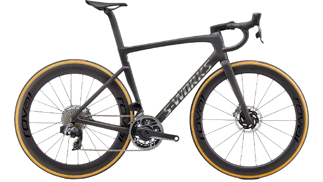
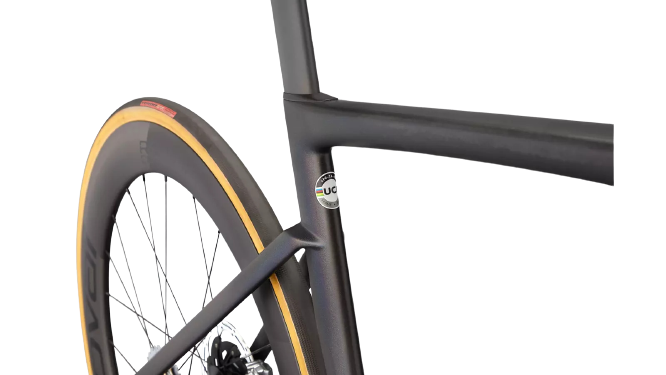
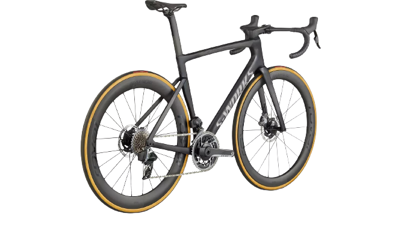

Why should you be forced to choose between aerodynamics and weight, between ride quality and speed? It’s simple, you shouldn’t. Enter the new Tarmac—climb on the lightest bike the UCI allows, then descend on the fastest. We’ve utilized our most advanced technologies, from our FreeFoil Shape Library to an all-new Rider-First Engineered™ frame, to deliver a race bike that is truly without compromise. The days of making sacrifices between “aero” and “lightweight” bikes are over—the all-new Tarmac is the fastest race bike, ever. One bike to rule them all.


| Frame | S-Works Tarmac SL7 FACT 12r Carbon |
| Wheelset | Roval Rapide CLX |
| Groupset | SRAM Red eTap AXS |
| Cockpit | S-Works Tarmac |
| Weight | - |
Color
SATIN CARBON
